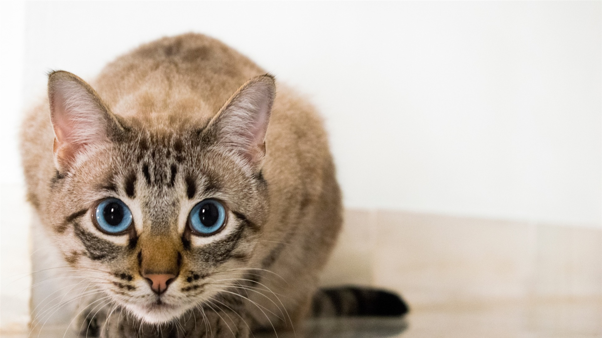

Los gatos domésticos son cazadores naturales capaces de acechar presas y atacarlas con garras y dientes afilados.

Los gatos se comunican marcando árboles, postes o muebles con sus garras o con su orina. Dejar su rastro es el modo de informar a otros del alcance de su territorio.
La dieta de los gatos domésticos se ha mantenido carnívora, por ello han desarrollado un intestino apropiado para digerir la carne cruda.
El gato doméstico llamado más comúnmente gato, y de forma coloquial minino, michino, michi, micho, mizo, miz, morroño o morrongo y algunos nombres más, es un mamífero carnívoro de la familia Felidae.

El número de gatos domésticos puede alcanzar actualmente alrededor de los 500 millones de ejemplares, cuya principal labor es mantener a raya la proliferación de determinados animales e insectos (véase roedores o cucarachas, entre otros) y a hacer compañía a sus dueños.

Los orígenes de perros y gatos son los mismos en cuanto a su antepasado común, que perteneció al grupo de los miciados y que aparecieron hace alrededor de 60 millones de años.